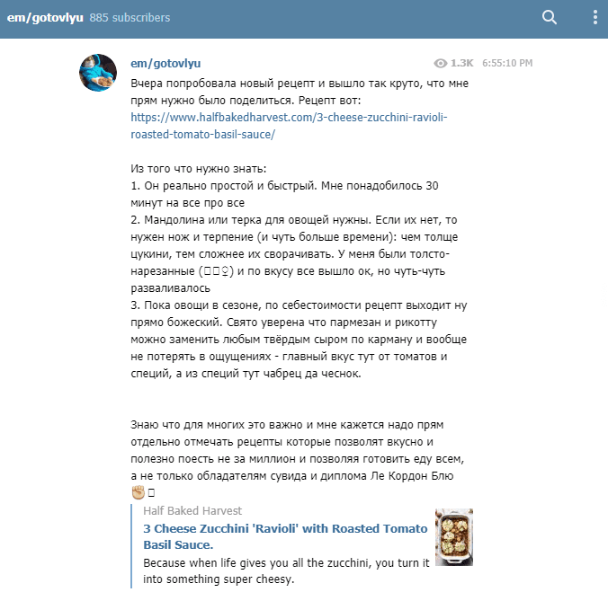
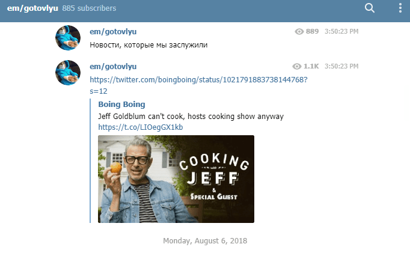

Telegram-каналы прочно вошли в нашу повседневную жизнь. Писатели, художники, музыканты, повара и обычные люди создают самые разные каналы и делятся со своей аудиторией различным контентом — от строго развлекательного до однозначно образовательного. В этом материале мы составили подборку из нескольких каналов о еде, которые могут быть интересны каждому.
хэппи мил (alinaloves)
Этот канал ведет Алина Дидковская, основная работа которой — корреспондент «Ведомостей». И если для газеты она пишет про бизнес, международные отношения и состояние рынка недвижимости, то в своем Telegram-канале девушка рассказывает о необычных блюдах в «Макдоналдсах» разных стран, выкладывает старые и редкие фотографии (например, дирижабля, проплывающего на фоне башен-близнецов в США), дегустирует новые позиции в меню и просто делится разными историями, в которых так или иначе замешан «Макдоналдс». Канал достаточно активный и регулярно обновляется.
Песнь дыма и кетчупа (meatme)
Если вы любите мясо, то канал «Песнь дыма и кетчупа» для вас. Его ведет Светлана Ханинаева, проделавшая головокружительный путь от выпускницы МГУ по специальности переводчика до мясника в Тель-Авиве. Светлана активно ведет свой канал, делясь рецептами, бытовыми историями и лайфхаками, связанными с мясом.
em/gotovlyu
1/3
2/3

3/3
Еще один канал про еду (удивительно, правда?), который не столько про рецепты, сколько про культуру питания. Дарья Нифонтова пишет статьи о еде, рассуждает о стереотипах касательно тех или иных продуктов (или диет) и регулярно публикует различные интересные материалы, связанные с едой.
Выжить на сотку (bomzhhack)
Каналы и блоги «эконом-формата» всегда были популярны, и мы не можем не включить такой в нашу подборку. Канал «Выжить на сотку» дает вам то, что вы от него ожидаете — самые разные рецепты блюд, суммарная стоимость ингредиентов к которым не превышает ста рублей. Как ни странно, получается даже вкусно.
Food& Science (foodandscience)
Канал «Food& Science» тоже не только и не столько про рецепты, сколько про мифы о питании и систематический научный подход к еде. Почему орехи со временем начинают испускать неприятный запах, как приготовить медузу или какие физические законы вступают в дело при приготовлении латте — все это и многое другое вы можете узнать на этом канале. Он, кстати, получил премию Food Show Awards как «Лучший Telegram-канал про еду».
Нескучные рецепты (edaTG)
Регулярно обновляющийся канал с кучей самых разных рецептов. Процесс приготовления показан через GIF-анимацию, с указанием граммовок и необходимых ингредиентов. Похожих каналов немало, но этот один из самых крупных и наглядных.